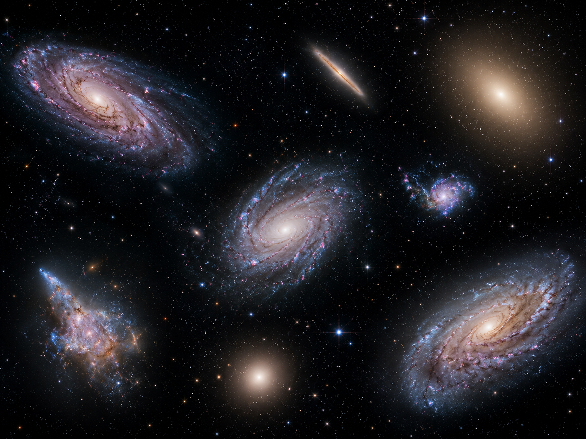

Galaxias espirales
Presentan brazos que se extienden alrededor de una región central. En ellos pueden encontrarse estrellas, gas y zonas de formación estelar.
La Vía Láctea es solamente una de las numerosas galaxias que existen en el universo. Cada galaxia puede contener estrellas, sistemas planetarios, gas, polvo y diferentes objetos cósmicos.
Las galaxias presentan tamaños, formas y estructuras muy diferentes. Algunas poseen brazos bien definidos, mientras que otras tienen formas más simples o irregulares.
El estudio de otras galaxias permite comparar su evolución con la de la Vía Láctea y comprender mejor cómo se organiza la materia a gran escala en el universo.

Presentan brazos que se extienden alrededor de una región central. En ellos pueden encontrarse estrellas, gas y zonas de formación estelar.
Poseen una forma redondeada u ovalada y suelen presentar una distribución más uniforme de sus estrellas.
No presentan una forma claramente definida. Su estructura puede estar relacionada con interacciones gravitatorias o procesos internos complejos.
Alrededor de la Vía Láctea existen diferentes galaxias. El estudio de estas vecinas permite comprender mejor la formación, la evolución y la interacción entre las galaxias.
Estas galaxias forman parte de estructuras mayores y pueden influirse entre sí mediante la gravedad.
La observación de galaxias lejanas permite investigar cómo era el universo en etapas anteriores y conocer estructuras que se encuentran a enormes distancias de nuestro planeta.
Cuanto más lejos observamos, más atrás en el tiempo estamos viendo, porque la luz necesita recorrer enormes distancias hasta llegar a la Tierra.